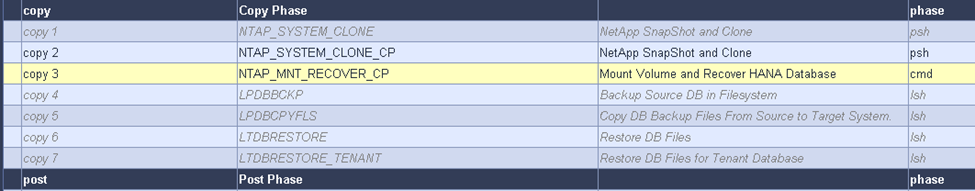

要求變更文件
要求變更文件 編輯此頁面
編輯此頁面 瞭解如何作出貢獻
瞭解如何作出貢獻SAP HANA系統使用LSC和SnapCenter 功能更新
本節說明如何將LSC與NetApp SnapCenter 功能區整合。LSC與SnapCenter 支援SAP的所有資料庫均可整合。不過、我們必須區分SAP Anywhere和SAP HANA、因為SAP HANA提供的集中通訊主機不適用於SAP Anywhere。
SAP Anyca的預設SnapCenter 值為安裝本地的程序、SnapCenter 除了資料庫伺服器的對應資料庫外掛程式、還可從該代理程式進行安裝。
本節SnapCenter 以SAP HANA資料庫為範例、說明LSC與列舉功能之間的整合。如先前針對SAP HANA所述、SnapCenter 安裝下列兩種不同的選項：
-
標準SnapCenter 版的Sfor Agent與SAP HANA外掛程式安裝。SnapCenter *在標準安裝中、SAP HANA資料庫伺服器會在本機安裝該代理程式與SAP HANA外掛程式。
-
使用中央通訊主機進行的支援安裝。*中央通訊主機安裝了支援資料庫相關作業的支援中心、SAP HANA外掛程式和HANA資料庫用戶端、可在環境中備份及還原多個SAP HANA系統的SAP HANA資料庫。SnapCenter SnapCenter因此、中央通訊主機不需要安裝完整的SAP HANA資料庫系統。
如需這些SnapCenter 不同的支援代理程式和SAP HANA資料庫外掛程式安裝選項的詳細資訊、請參閱技術報告 "TR-4614：SAP HANA備份與還原SnapCenter 功能搭配使用"。
以下各節將強調使用SnapCenter 標準安裝或中央通訊主機、將LSC與支援功能整合的差異。值得注意的是、無論安裝選項和使用的資料庫為何、未反白顯示的所有組態步驟都是相同的。
若要從來源資料庫執行自動Snapshot複本型備份、並為新的目標資料庫建立複本、LSC與SnapCenter Sfor之間所述的整合會使用中所述的組態選項和指令碼 "TR-4667：利用SnapCenter 下列功能自動化SAP HANA系統複製與複製作業"。
總覽
下圖顯示了SAP系統更新生命週期的典型高層工作流程SnapCenter 、其中包含不含LSC的現象：
-
目標系統的一次性初始安裝與準備。
-
手動預先處理（匯出授權、使用者、印表機等）。
-
如有必要、刪除目標系統上已存在的實體複本。
-
將現有的來源系統Snapshot複本複製到SnapCenter 由NetApp執行的目標系統。
-
手動SAP後處理作業（匯入授權、使用者、印表機、停用批次工作等）。
-
系統可作為測試或QA系統使用。
-
當要求新的系統重新整理時、工作流程會在步驟2重新啟動。
SAP客戶知道、下圖中以綠色顯示的手動步驟非常耗時且容易出錯。使用LSC和SnapCenter 合並功能時、這些手動步驟會以可靠且可重複的方式與LSC一起執行、並提供內部和外部稽核所需的所有必要記錄。
下圖概述SnapCenter型SAP系統的一般更新程序。

先決條件與限制
必須滿足下列先決條件：
-
必須安裝此元件。SnapCenter來源和目標系統必須在SnapCenter 標準安裝或使用中央通訊主機時、以支援功能進行設定。您可以在來源系統上建立Snapshot複本。
-
儲存後端必須在SnapCenter 下列影像中正確設定、如下圖所示。

接下來的兩個映像涵蓋SnapCenter 在每個資料庫伺服器本機安裝的標準安裝、其中包含了本機安裝的Oracle for Agent和SAP HANA外掛程式。
來源資料庫上必須安裝此程式及適當的資料庫外掛程式。SnapCenter

必須在目標資料庫上安裝該程式和適當的資料庫外掛程式。SnapCenter

下列影像說明中央通訊主機部署、SnapCenter 其中將駐點代理程式、SAP HANA外掛程式及SAP HANA資料庫用戶端安裝在集中式伺服器（例如SnapCenter 、還原伺服器）上、以管理全域多個SAP HANA系統。
必須在中央通訊主機上安裝支援程式、SAP HANA資料庫外掛程式和HANA資料庫用戶端。SnapCenter

來源資料庫的備份必須在SnapCenter 功能表中正確設定、才能成功建立Snapshot複本。

LSC主機和LSC工作人員必須安裝在SAP環境中。在此部署中、我們也在SnapCenter 目標SAP資料庫伺服器上安裝LSC主機、並在目標SAP資料庫伺服器上安裝LSC工作人員。更多詳細資訊請參閱下節「」[Lab setup]。」
文件資源：
實驗室設定
本節說明在示範資料中心中設定的架構範例。此設定分為標準安裝和使用中央通訊主機的安裝。
標準安裝
下圖顯示SnapCenter 一套標準安裝、其中來源與目標資料庫伺服器上的來源與目標資料庫伺服器、均安裝了包含資料庫外掛程式在內的Rse-Agent。在實驗室設定中、我們安裝了SAP HANA外掛程式。此外、LSC員工也安裝在目標伺服器上。為了簡化並減少虛擬伺服器的數量、我們在SnapCenter 支援服務器上安裝了LSC主機。下圖說明不同元件之間的通訊。

集中通訊主機
下圖顯示使用中央通訊主機的設定。在此組態中SnapCenter 、專屬伺服器上安裝了包含SAP HANA外掛程式和HANA資料庫用戶端的功能。在此設定中、我們使用SnapCenter 支援服務器來安裝中央通訊主機。此外、LSC工作人員也再次安裝在目標伺服器上。為了簡化並減少虛擬伺服器的數量、我們決定也在SnapCenter 該伺服器上安裝LSC主機。不同元件之間的通訊如下圖所示。

Libelle SystemCopy的初始一次性準備步驟
LSC安裝有三個主要元件：
-
* LSC master。*顧名思義、這是主元件、可控制以Libelle為基礎之系統複本的自動工作流程。在示範環境中、LSC主機安裝在SnapCenter SURL伺服器上。
-
* LSC員工* LSC員工是Libelle軟體的一部分、通常在目標SAP系統上執行、並執行自動化系統複本所需的指令碼。在示範環境中、LSC員工安裝在目標SAP HANA應用程式伺服器上。
-
* LSC衛星* LSC衛星是Libelle軟體的一部分、可在必須執行進一步指令碼的協力廠商系統上執行。LSC主機也能同時發揮LSC衛星系統的作用。
我們首先定義LSC內的所有相關系統、如下圖所示：
-
* 172.30.15.35* SAP來源系統和SAP HANA來源系統的IP位址。
-
* 172.30.15.3*此組態的LSC主機和LSC子系統IP位址。由於我們在SnapCenter S還原 伺服器上安裝了LSC主機、SnapCenter 因此此Windows主機上已有更新版的支援程式、因為這些程式是SnapCenter 在安裝過程中安裝的。因此、我們決定啟用此系統的LSC衛星角色、並在此SnapCenter 主機上執行所有的NetApp PowerShell Cmdlet。如果您使用不同的系統、請務必SnapCenter 根據SnapCenter 《支援》文件、在此主機上安裝《支援系統》Cmdlet。
-
* 172.30.15.36.* SAP目的地系統、SAP HANA目的地系統及LSC員工的IP位址。
您也可以使用IP位址、主機名稱或完整網域名稱、而非IP位址。
下圖顯示主要、工作者、衛星、SAP來源、SAP目標、 來源資料庫和目標資料庫。

對於主要整合、我們必須再次將組態步驟分隔成標準安裝、並使用中央通訊主機進行安裝。
標準安裝
本節說明使用標準安裝時所需的組態步驟、SnapCenter 其中來源系統和目標系統上安裝了哪些組件和必要的資料庫外掛程式。使用標準安裝時、掛載實體磁碟區及還原目標系統所需的所有工作、都是從SnapCenter 伺服器本身的目標資料庫系統上執行的程式庫代理程式執行。這可讓您存取SnapCenter 所有與實體複製相關的詳細資料、這些詳細資料可透過來自於該代理程式的環境變數取得。因此、您只需要在LSC複製階段建立一個額外工作。此工作會在來源資料庫系統上執行Snapshot複製程序、並在目標資料庫系統上執行實體複製與還原程序。所有SnapCenter 的相關工作都是使用在LSC工作「NTAP_system_clone」中輸入的PowerShell指令碼來觸發。
下圖顯示複製階段的LSC工作組態。

下圖重點說明「NTAP_system_clone」程序的組態。因為您正在執行PowerShell指令碼、所以此Windows PowerShell指令碼會在衛星系統上執行。在這種情況SnapCenter 下、這是安裝有LSC主機的S不到 位伺服器、也可做為衛星系統。

由於LSC必須瞭解Snapshot複本、複製及還原作業是否成功、因此您必須定義至少兩種傳回程式碼類型。其中一個程式碼用於成功執行指令碼、另一個程式碼用於指令碼的失敗執行、如下圖所示。
-
如果執行成功、則必須從指令碼將「LSC：OK」寫入標準輸出。
-
如果執行失敗、則必須從指令碼將「LSC:ERROR」寫入標準輸出。

下圖顯示PowerShell指令碼的一部分、該指令碼必須執行才能在來源資料庫系統上執行Snapshot型備份、並在目標資料庫系統上執行實體複本。指令碼不打算完成。相反地、指令碼會顯示LSC與SnapCenter S灘 的整合外觀、以及設定的簡易程度。

由於指令碼是在LSC主機上執行（也就是子系統）、SnapCenter 因此必須以具有適當權限的Windows使用者身分執行Sing Server上的LSC主機、以便在SnapCenter S還原 中執行備份與複製作業。若要驗證使用者是否擁有適當權限、使用者應能在SnapCenter UI中執行Snapshot複本和複製。
無需在SnapCenter S什麼 伺服器上執行LSC主機和LSC衛星。LSC主機和LSC衛星可在任何Windows機器上執行。在LSC衛星上執行PowerShell指令碼的先決條件、是SnapCenter Windows Server上已安裝了SetvPowerShell Cmdlet。
集中通訊主機
若要SnapCenter 使用中央通訊主機整合LSC與Sfor、唯一必須進行的調整只能在複製階段執行。Snapshot複本和實體複本是使用SnapCenter 中央通訊主機上的支援中心代理程式所建立。因此、新建立的磁碟區的所有詳細資料只能在中央通訊主機上使用、而無法在目標資料庫伺服器上使用。不過、目標資料庫伺服器需要這些詳細資料、才能掛載複製磁碟區並執行還原。這就是複製階段需要執行兩項額外工作的原因。在中央通訊主機上執行一項工作、並在目標資料庫伺服器上執行一項工作。這兩項工作如下圖所示。
-
* NTAP_system_clone _cp.*此工作會使用PowerShell指令碼、在SnapCenter 中央通訊主機上執行必要的支援功能、建立Snapshot複本和複本。因此、這項工作會在LSC衛星上執行、我們的執行個體是在Windows上執行的LSC主控裝置。此指令碼會收集有關複本和新建立之磁碟區的所有詳細資料、並將其交給在目標資料庫伺服器上執行的LSC工作人員執行的第二項工作「NTAP_MNT_recover _CP」。
-
* NTAP_MNT_recover_cp.*此工作會停止目標SAP系統和SAP HANA資料庫、卸載舊磁碟區、然後根據先前工作「NTAP_system_clone _CP」所傳遞的參數來掛載新建立的儲存實體磁碟區。然後還原並還原目標SAP HANA資料庫。

下圖重點說明工作「NTAP_system_clone _CP」的組態設定。這是在衛星系統上執行的Windows PowerShell指令碼。在此案例中、衛星系統是SnapCenter 安裝有LSC主機的S不到 伺服器。

由於LSC必須瞭解Snapshot複製與複製作業是否成功、因此您必須定義至少兩種傳回程式碼類型：一個傳回程式碼可成功執行指令碼、另一個傳回程式碼則可失敗執行指令碼、如下圖所示。
-
如果執行成功、則必須從指令碼將「LSC：OK」寫入標準輸出。
-
如果執行失敗、則必須從指令碼將「LSC:ERROR」寫入標準輸出。

下圖顯示PowerShell指令碼的一部分、必須執行才能在SnapCenter 中央通訊主機上使用該代理程式執行Snapshot複本和複本。指令碼並不完整。而是使用指令碼來顯示LSC和SnapCenter 合並功能之間的整合、以及如何輕鬆設定。

如前所述、您必須將複製磁碟區的名稱交給下一個工作「NTAP_MNT_recover _CP」、以便將複製磁碟區掛載到目標伺服器上。複製磁碟區的名稱也稱為交會路徑、儲存在變數'$JFunctionPath’中。將工作移交至後續的LSC工作、是透過自訂的LSC變數來達成。
echo $JunctionPath > $_task(current, custompath1)_$
由於指令碼是在LSC主機上執行（也就是子系統）、SnapCenter 因此必須以具有適當權限的Windows使用者身分、在SnapCenter S還原 伺服器上執行備份與複製作業。若要驗證是否擁有適當的權限、使用者應能在SnapCenter 該GUI中執行Snapshot複本和複製。
下圖重點說明工作「NTAP_MNT_recover_CP」的組態設定。因為我們想要執行Linux Shell指令碼、所以這是在目標資料庫系統上執行的命令指令碼。

由於LSC必須注意掛載複製磁碟區、以及還原及還原目標資料庫是否成功、因此我們必須定義至少兩種傳回程式碼類型。其中一個程式碼用於成功執行指令碼、另一個程式碼用於指令碼執行失敗、如下圖所示。
-
如果執行成功、則必須從指令碼將「LSC：OK」寫入標準輸出。
-
如果執行失敗、則必須從指令碼將「LSC:ERROR」寫入標準輸出。

下圖顯示用於停止目標資料庫、卸載舊磁碟區、掛載複製磁碟區、以及還原及還原目標資料庫的部分Linux Shell指令碼。在先前的工作中、交會路徑會寫入LSC變數。下列命令會讀取此LSC變數、並將值儲存在Linux Shell指令碼的「$JFunctionPath'」變數中。
JunctionPath=$_include($_task(NTAP_SYSTEM_CLONE_CP, custompath1)_$, 1, 1)_$
目標系統上的LSC工作人員以「<sidaadm>'」的形式執行、但掛載命令必須以root使用者的身分執行。這就是為什麼您必須建立「CUS_plugin_host_wraper_script.sh」的原因。指令碼「cent_plugin_host_wraper_script.sh」是從工作「NTAP_MNT_recovery _CP」中使用「show」命令來呼叫。指令碼使用「show」命令、會以UID 0執行、我們可以執行所有後續步驟、例如卸載舊磁碟區、掛載複製磁碟區、以及還原及還原目標資料庫。若要使用「sudo」啟用指令碼執行、必須在「/etc/udoers'」中新增下列行：
hn6adm ALL=(root) NOPASSWD:/usr/local/bin/H06/central_plugin_host_wrapper_script.sh

SAP HANA系統更新作業
現在LSC和NetApp SnapCenter 供應器之間的所有必要整合工作都已經完成、因此只要按一下滑鼠、就能開始全自動SAP系統更新。
下圖顯示標準安裝中的「NTAP」工作「System」（系統）「Clone」（複製）。如您所見、建立Snapshot複本和實體複本、在目標資料庫伺服器上掛載實體複本磁碟區、以及還原及還原目標資料庫、所花的時間約為14分鐘。值得一說的是、使用Snapshot和NetApp FlexClone技術、這項工作的持續時間幾乎與來源資料庫的大小無關。

下圖顯示使用中央通訊主機時的兩項工作：「NTAP_system_clone _CP」和「NTAP_MNT_recovery _CP」。如您所見、建立Snapshot複本、複製、在目標資料庫伺服器上掛載複本磁碟區、以及還原及還原目標資料庫、所需時間約12分鐘。使用標準安裝時、執行這些步驟所需的時間大致相同。同樣地、Snapshot與NetApp FlexClone技術也能讓這些工作持續快速地完成、而且不受來源資料庫的大小限制。